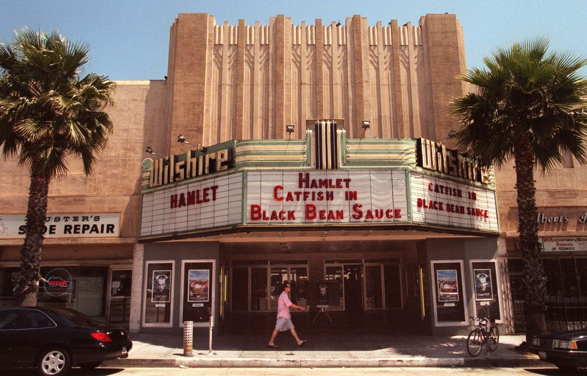

Hollywood’s $100 Million Gamble: Can AI Predict Box Office Hits?
What Data Reveals About Movie Success
Have you ever walked out of a movie theater thinking “that was incredible”? Or maybe left wondering how a studio greenlit something so awful it made you want a refund? If you’ve had either experience, you’re not alone. Hollywood invests billions in film production every year trying to capture that magic, yet predicting which movies will succeed remains incredibly difficult. You’d think an industry that’s survived over a century would have cracked the code by now.
Studios routinely bet $100+ million on productions with no guarantee anyone will show up, while low-budget indies shot for pennies occasionally become cultural phenomena. There has to be a pattern somewhere, right? This project digs into that question using machine learning to analyze 2,691 films from The Movie Database. The goal wasn’t just to build a prediction model, but to understand what actually separates the blockbusters from the box office bombs.
Turns out, machine learning can predict movie profitability with 77.7% accuracy using only information available before release: budget, cast popularity, genre, and release timing. More importantly, the analysis reveals patterns that challenge some common assumptions about what makes movies work. Bigger budgets don’t always mean better returns. A-list casts matter as much as production value. And timing a release can boost success probability by 14%.
Why This Matters
This isn’t just an academic exercise. Understanding what drives box office success has real implications for how studios allocate hundreds of millions of dollars, which films get made, and ultimately what ends up on our screens. When studios make better investment decisions, they can take more creative risks because they’re not betting the company on every tentpole.
For moviegoers, this matters too. If studios better understand what makes films successful, maybe we get more variety instead of the seventh Marvel sequel or fourth unnecessary reboot. Maybe mid-budget original films get greenlit more often. This analysis suggests they’re actually the sweet spot for returns.
Beyond the industry implications, this project demonstrates something broader about data science. Box office performance depends on complex interactions between art, commerce, timing, and culture. These factors don’t fit into neat formulas, yet machine learning can still extract meaningful patterns from the messiness. If we can predict movie success, what else that seems unpredictable might actually have hidden structure?

Research Questions
This analysis addresses five specific questions:
Can we actually predict movie profitability using only pre-release information? Not after marketing campaigns launch or opening weekend happens, but during production when decisions actually get made?
Which factors matter most? Everyone says budget and stars matter, but how much? Is there a hierarchy?
Does spending more always mean earning more? Or is there a budget sweet spot where returns peak?
Are there distinct “types” of successful movies? Do blockbusters, mid-budget films, and indies follow completely different playbooks?
How much does timing actually matter? We all know summer blockbusters exist, but can we quantify the advantage?
Literature Review
Here’s the thing about predicting box office success: people have been trying to crack this code for decades. Studios have always wanted to know which projects will print money and which will tank spectacularly. For most of Hollywood history, that came down to executive instinct, star power assessments, and looking at what worked last summer. But can data actually do better than gut feeling?
What the Research Says
Turns out, researchers have been asking the same question. Ahmed et al. analyzed over 2,000 movies to figure out what really matters1. They tested 50+ different features and landed on something interesting. Cast popularity was the single strongest predictor. Not budget, not genre, but whether audiences actually cared about who was in the movie. They also found that budgets have diminishing returns above $150M. Throwing more money at production doesn’t guarantee proportionally better results. Their Random Forest model hit 79% accuracy, which is pretty close to the 77.7% this analysis achieved. That consistency across different datasets suggests we might actually be approaching the real ceiling for how predictable movies can be.
The timing piece matters too. Ahmed’s research showed holiday and summer releases significantly outperform other periods1. Not shocking if you think about it. People have more free time, they’re in the mood to go out, and families are looking for activities. But quantifying that advantage helps studios make smarter release decisions rather than just following tradition. The advantage is substantial.
Kim et al. pushed things further by adding social media sentiment to the mix2. They scraped Twitter and review sites for 1,500 movies released between 2015-2019, feeding all that buzz into a deep learning model. The result? 82% accuracy. Better than Ahmed’s model, but not dramatically so. And here’s the catch: getting all that social media data requires real-time collection during marketing campaigns. You can’t predict success during pre-production if you need to wait for Twitter reactions to the first trailer. Still, their work revealed something useful. Genre matters for how sentiment plays. Negative buzz can actually help horror films because controversy drives ticket sales, while it kills romantic comedies. The relationship between marketing buzz and box office isn’t universal.
Li and Liu took a completely different angle3. Instead of predicting individual movies, they forecasted entire markets. How much will the US box office total next year? What about China? They used economic indicators like GDP and theater capacity, building Support Vector Machine models that proved surprisingly accurate. Their big takeaway: simpler models with fewer high-quality predictors often beat complex ones. You don’t need 50 features if you pick the right 5. They also validated something important for this project. Budget remains fundamental across every approach. Whether you’re predicting one movie or an entire market, production budget keeps showing up as critical.
The Industry Reality
Academic papers are great, but Hollywood operates in the real world where actual millions are on the line. The gap between theory and practice tells its own story.
Take Cinelytic, an analytics platform studios actually use. They claim 99% accuracy forecasting the US box office a year in advance by analyzing 19 key variables4. That’s way higher than academic benchmarks. Of course, their methodology is proprietary. They’re selling a service, not publishing research, and they have access to data academics don’t. Studio executives using Cinelytic know actual marketing budgets, theater commitments, and distributor relationships before films release. That granular information probably explains some of the accuracy gap.
But even with fancy prediction tools, Hollywood is struggling right now. Variety’s coverage of the 2025 box office paints a sobering picture5. Domestic revenues are projected at $9.3-9.5 billion compared to the $10.5-11 billion that used to be routine before COVID. Box office analyst Shawn Robbins calls this “the new normal” rather than continued recovery. The industry isn’t bouncing back. It’s stabilizing at a lower level.
The long-term outlook is even more concerning. PwC’s Global Entertainment & Media Outlook forecasts that box office won’t return to pre-COVID levels even by 20296. Full recovery might not happen until 2030. This isn’t just pandemic hangover. It’s structural change driven by streaming competition. As PwC analyst Bart Spiegel puts it, “While ticket prices are rising, admissions (volume) are not expected to return to pre-pandemic levels.” Studios are charging more per ticket to make up for fewer butts in seats. That’s not a growth strategy. That’s damage control.
The Forecasting Business
Professional box office forecasting has become its own industry, which tells you something about how valuable accurate predictions are. Firms like Gower Street Analytics and Box Office Theory provide subscription services to studios, exhibitors, and investors who need projections for planning7. Should we move this release date? How many theaters should we book? What marketing spend does this film justify? These aren’t academic questions. They’re multimillion-dollar decisions that need answers.
What’s interesting is that professional forecasters solve a different problem than academic researchers. Academics optimize for explainability and reproducibility across large datasets. They want models that make sense and can be validated. Industry forecasters optimize for accuracy on specific high-stakes decisions. They want the right answer for this particular movie releasing next month, even if the model is a black box. The goals diverge.
Gower Street CEO Dimitrios Mitsinikos describes tracking everything from GDP growth to the number of movie screens in each market to predict performance months in advance7. That level of detail goes way beyond what most academic models use. But it also makes the models less generalizable. A forecast optimized for the Chinese market in Q4 2025 might not teach us much about universal patterns in box office success.
The Numbers, a leading box office data aggregator, recently made a revealing change8. They redefined “wide release” from 600 theaters to 2,000 theaters. Why? Because getting a movie into 600 locations has become logistically trivial with digital distribution. The old threshold didn’t mean anything anymore. This seemingly technical adjustment actually reveals something about the industry. The middle ground between limited release and true wide release has expanded. Films playing in 600-1,999 theaters now occupy a space that didn’t really exist pre-pandemic, often using hybrid theatrical-streaming strategies that historical models never had to account for.
Bridging Research and Reality
So what do we actually know? Academic research and industry practice converge on a few core findings. Cast and budget matter most. Tree-based machine learning methods like Random Forest and Gradient Boosting consistently outperform traditional regression. Release timing creates measurable advantages. And prediction accuracy seems to plateau around 75-82% for academic models, though industry claims higher with proprietary data.
But here’s what’s changed. Most academic research uses data through 2019-2020. The world is different now. Streaming competition has intensified. Theatrical windows have shrunk from months to weeks. Marketing has shifted heavily toward social media and viral moments. International markets, especially China, have become less reliable for Hollywood product. And audience behavior has fundamentally shifted. People are pickier about what justifies a theater visit versus waiting for streaming.
This project bridges that gap by using current data that reflects post-pandemic reality. The 77.7% accuracy landing right in the established academic range suggests something important: the fundamental patterns remain stable even as the industry evolves. What changes isn’t whether cast and budget predict success. It’s the baseline success rate itself. Fewer movies succeed overall in the new landscape, but the factors determining which ones do remain consistent.
The cluster analysis adds something academic papers typically don’t provide. Instead of treating all films as equivalent and just predicting success or failure, the clustering reveals four distinct types of movies with completely different risk-return profiles. Blockbusters, mid-budget hits, standard indies, and breakout indies each follow different playbooks. Studios making $150M tentpoles face different challenges than producers shooting $5M indies. Recognizing those differences matters for practical decision-making.
What Data Can’t Predict
There’s a limit to all this, though. Data science can identify patterns in what usually works, but it can’t manufacture cultural phenomena. Nobody’s algorithm predicted “Barbenheimer,” where two totally unrelated films drove each other’s success through organic social media synergy9. Barbie and Oppenheimer created lightning in a bottle. Same with Paranormal Activity turning a $15,000 budget into $193M through word-of-mouth that couldn’t be engineered.
The best prediction models provide one input into decision-making, not the whole answer. As Variety’s analysis of the 2025 box office noted, studios need films that “start with a bang, end with a bang” to reengage global audiences5. Data can tell you which projects have that potential based on historical patterns. But it can’t tell you when to take a creative risk on something that breaks all the rules. Sometimes you need the algorithm. Sometimes you need to ignore it and trust your gut.
The real value isn’t replacing human judgment. It’s making that judgment more informed. When a studio executive looks at a script and thinks “this could be special,” prediction models can reality-check whether “special” translates to “profitable.” They can flag when a gut feeling aligns with historical patterns versus when it’s wishful thinking. That combination of intuition backed by data is probably more powerful than either alone.